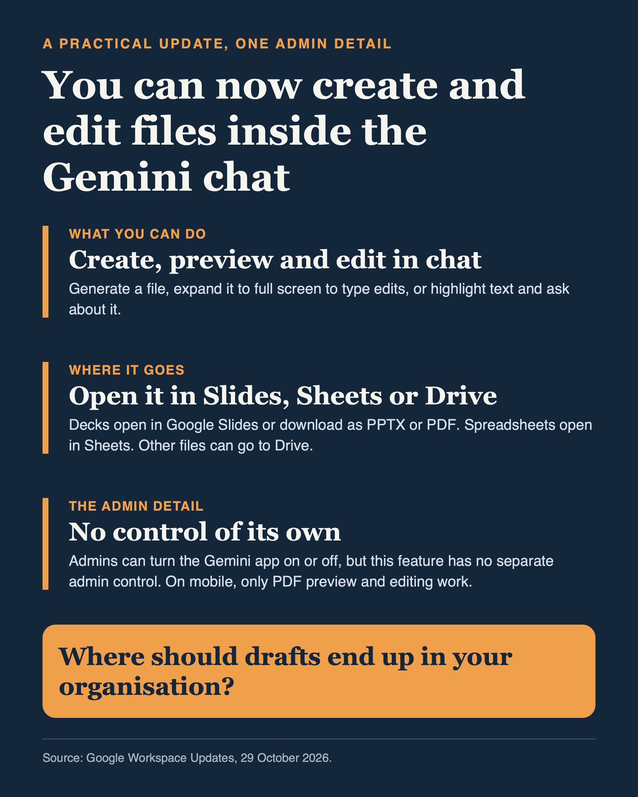

Editing files inside Gemini chat
You can now create and edit files inside the Gemini chat, and there's no admin control specific to this feature.
Google announced this on 29 October. You can generate a file, expand it to full screen to type edits, highlight text to ask about it, or ask Gemini to refine it. Slide decks can be opened in Google Slides or downloaded as PPTX or PDF, and spreadsheets can be opened in Google Sheets. Documents, PDFs and other generated files can be uploaded to Google Drive.
On mobile, only PDF preview and editing work. Everything else needs the web.
A useful workflow to try: ask for a rough first draft, highlight the weakest section, and ask about that part only. It's a more focused edit than asking for the whole thing to be rewritten.
If you're running AI adoption, the admin detail is worth a look. Admins can turn the Gemini app on or off, but this feature has no separate control. So if Gemini is already on in your organisation, it's worth adding to your guidance on where drafts should end up.
